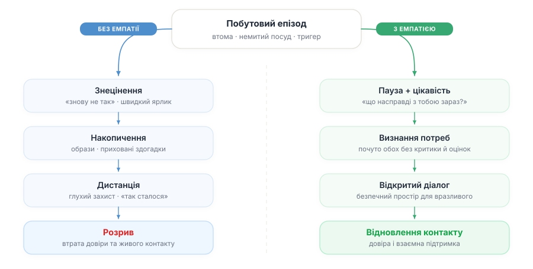
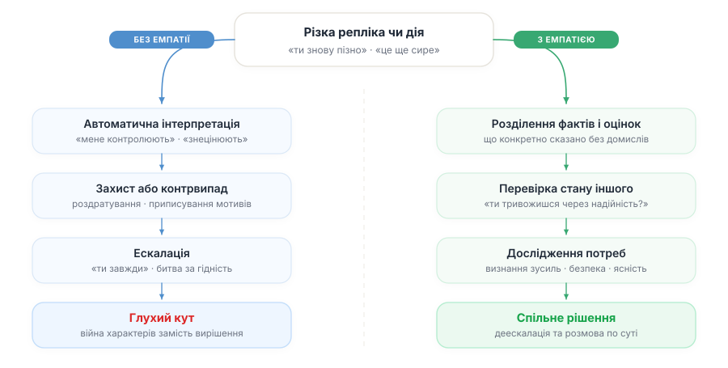
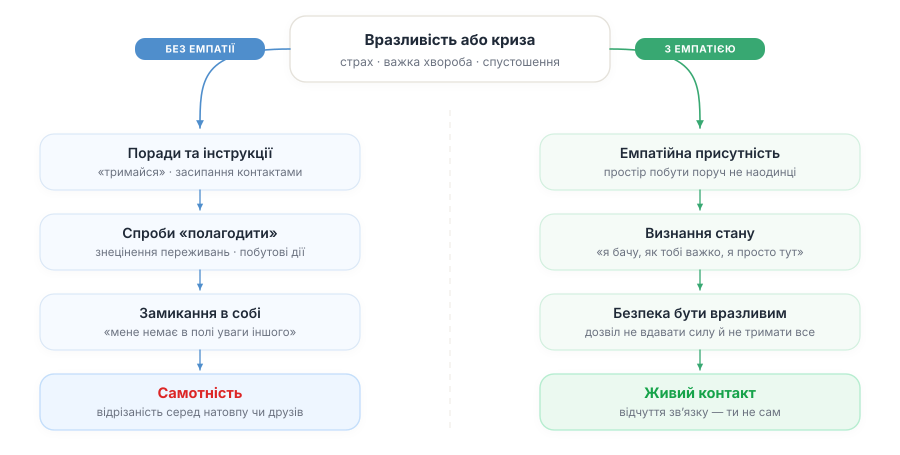
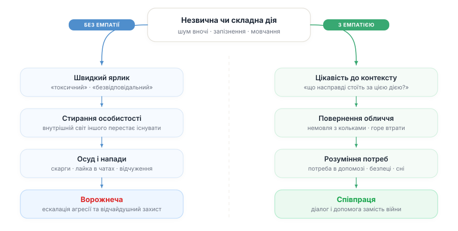
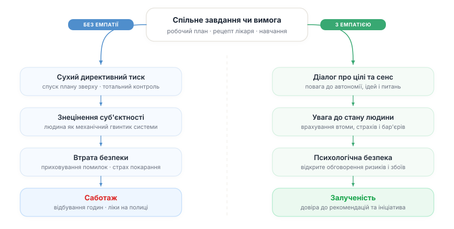
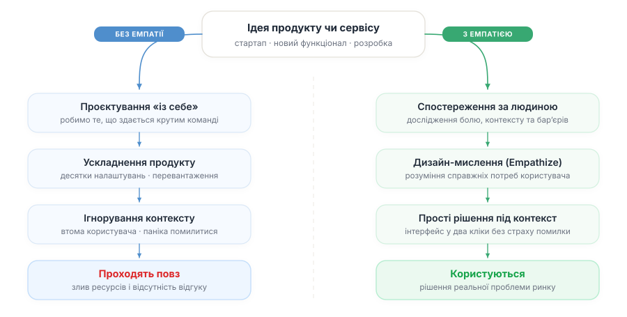
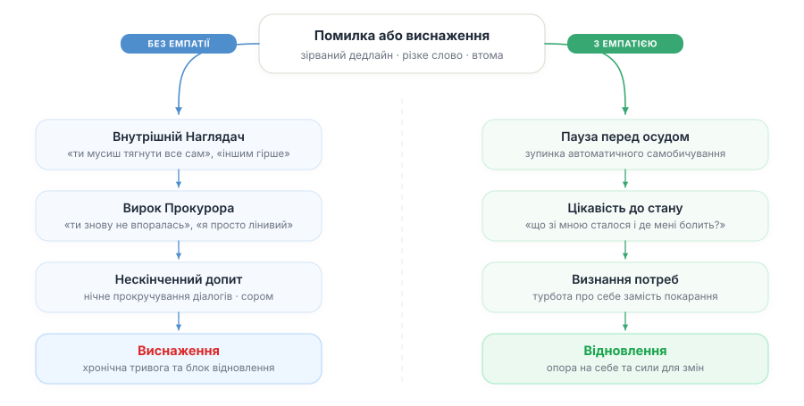
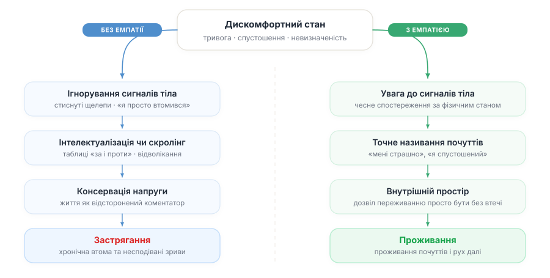
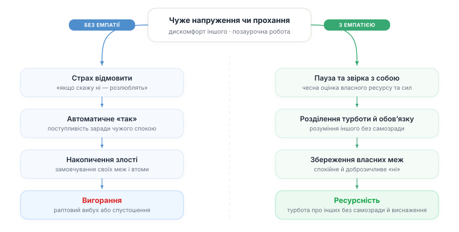
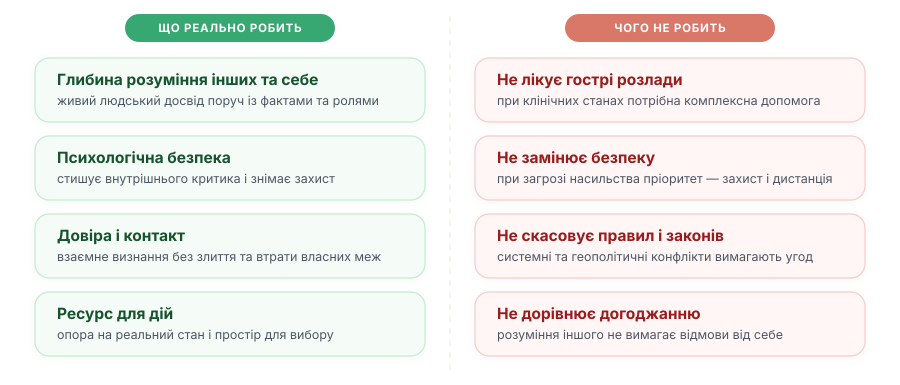

Емпатію називають універсальним рішенням для конфліктів, але де вона справді працює, а де лише маскує справжні проблеми? Давайте розбиратися.
Далі розберу дев’ять ситуацій, де емпатія справді може допомогти, від уваги в стосунках і розмов у конфлікті до продуктів і контакту з собою. І окремо чотири межі, де однієї емпатії замало і потрібні інші опори: лікування, безпека, правила й домовленості. Багато де емпатія не вирішує проблеми безпосередньо, але вона покращує якість сприйняття проблеми що може призводити до позитивних змін.
Контекст і визначення
Емпатію традиційно поділяють на когнітивну та афективну. Перша це розуміння точки зору, друга — емоційний відгук. В академічних дослідженнях та історії ідей (детальніше у Інтерактивній хронології емпатії) на сьогодні немає єдиного усталого розуміння феномену. Я наведу робоче означення, яким користуюся.
Емпатія — бути присутнім поруч із людиною, не втрачаючи при цьому себе: з повагою розуміти, що вона переживає та який у неї емоційний стан, намагаючись сприймати світ її очима. Зрозуміти й відчути людину — не означає «стати» чи злитися з нею, схвалити її поведінку чи автоматично погодитися.
Водночас навколо неї існує низка стійких міфів. Наприклад, помилково вважати успішною емпатії спробу «уявити себе на місці іншого», бо такий підхід веде до егоцентричного спотворення. Тоді як зріла емпатія вимагає бачити ситуацію крізь призму світогляду, досвіду й обмежень самої людини. Для цього також не обов'язковий ідентичний життєвий досвід — людський мозок здатен успішно реконструювати стан іншого за аналогією навіть без особистого переживання схожих подій.
Ще одна поширена помилка — вважати, що комусь емпатія дана від природи більше, а комусь менше. Насправді це не стала вроджена риса, а пластична навичка, яку можна розвивати й тренувати. Без практики ми раз за разом переоцінюємо власне вміння інтуїтивно «читати» стани інших і зазвичай просто приписуємо їм свої. З цієї ж причини не існує й уродженої «жіночої переваги», бо жінки не народжуються емпатичнішими за чоловіків.
Зручно виділити два нерозривні напрямки однієї уваги:
- Зовнішня емпатія (до інших): що зараз із людиною поруч, як вона бачить ситуацію зі свого боку та чого їй насправді бракує.
- Внутрішня емпатія (до себе): що насправді відбувається зі мною в живому емоційному й тілесному стані.
Ці дві навички розвиваються окремо, але доповнюють одна одну.
Як побутові дрібниці й знецінення підточують довіру, та як щирий інтерес до стану іншого повертає живий контакт.
До іншихЧому суперечки виникають через різне сприйняття фактів, і як чути незадоволені потреби замість взаємних звинувачень.
До іншихЧому формальні поради та спроби «полагодити» лише віддаляють, а проста емпатійна присутність створює справжню близькість.
До іншихЯк ярлики стирають особистість і провокують захист, та як емпатійний погляд відкриває мотиви складної поведінки.
До іншихЧому директивний контроль призводить до тихих страйків, а психологічна безпека відновлює ініціативу та довіру.
До іншихЯк розробка «із себе» марнує ресурси, і чому глибоке розуміння болю реального користувача стоїть в основі дизайн-мислення.
До іншихЯк втихомирити внутрішнього Наглядача й Прокурора та замінити самобичування на доброзичливе дослідження себе.
ВнутрішняПастка безкінечного аналізу й відволікання: як повернутися до відчуття реальності та чесного контакту зі своїм станом.
ВнутрішняЧому бажання бути «зручним» призводить до виснаження, і як турбота про власні межі дозволяє допомагати без самозради.
ВнутрішняI. ЕМПАТІЯ ДО ІНШИХ
1. Брак уваги у стосунках
Буває, стосунки тривають роками, а потім розлітаються ніби за один день. Насправді розрив зріє повільно, через сотні дрібних побутових моментів, де замість уваги до стану людини звучить чергове знецінення. Кожна така сцена стирає живу особистість до простої оцінки її поведінки.
Наприклад. Конфлікт вдома через немитий посуд або безлад. Один партнер відчуває, що затишок зруйновано і весь порядок у домі тримається лише на ньому. Інший чує в докорах лише постійне невдоволення: ніби після виснажливого дня його знову повчають. Зовні суперечка точиться навколо побуту, але за нею стоять глибші незадоволені потреби. Побутові дрібниці поступово стають «доказом важкого характеру» і ведуть пару до розриву.
Або ситуація в дружбі. Хтось замовкає на кілька тижнів через професійну кризу та сором зізнатися у безпорадності. Інший сприймає мовчання як байдужість і теж відсторонюється, щоб не нав'язуватися. Згодом обоє щиро переконані, що перший крок мав зробити інший, і дружба тихо згасає без жодного конфлікту.
Накопичення непорозумінь і здогадок. Людина починає взаємодіяти не з людиною, а зі спрощеним уявленням про неї. Довіра тане через відчуття «мене вже не намагаються зрозуміти». Виникає емоційна дистанція, яку потім пояснюють словами «так сталося».
Емпатійна взаємодія може стримувати непомітне накопичення образ і взаємної глухоти. Вона створює умови для щирої цікавості до внутрішнього стану іншого: замість зводити людину до її втоми чи помилки, з'являється більше простору запитати, що насправді стоїть за її роздратуванням чи мовчанням.
Коли потреби й переживання обох сторін отримують визнання, побутові суперечки з меншою ймовірністю перетворюються на битву за гідність. За таких умов вчасне відновлення довіри, відкрита розмова про вразливе та збереження живого контакту стають більш імовірними задовго до появи прірви.

2. Ескалація конфліктів
Сварки зазвичай пояснюють зіткненням характерів чи принципів, мовляв, «ми різні люди», «він мене не поважає» або «вона все ускладнює». Здається, що між людьми прірва, але під цим лежить простіша річ: двоє людей просто по-різному побачили й відчули одну й ту саму ситуацію.
Приклад. Мати пише: «Ти знову пізно». Доросла донька чує в цьому тотальний контроль і недовіру. А мати в нічній тиші читає тривожні новини про обстріли і просто боїться за її життя. Жодна не має лихого наміру, але обидві залишаються самотніми й ображеними у власних версіях розмови.
Під час презентації результатів колега кидає коротку репліку: «Ну це ще зовсім сире». Для нього це лише робоча констатація: попереду ще багато правок. Але для людини, яка ночами доробляла проєкт, фраза звучить як знецінення: «ти знову не впорався, твої зусилля нічого не варті». У відповідь спалахує роздратування або глухий захист. Суперечка вже точиться не про правки: один відстоює якість, інший — власну гідність і право на визнання. При цьому кожен переконаний, що говорить виключно про факти.
Конфлікт починається не тільки там, де люди справді хочуть різного, а й там, де ніхто не перевірив, що саме почув інший. Далі кожен добудовує характер опонента з одного речення, з'являються слова «завжди» і «ніколи», а справжньої причини за купою образ уже не розгледіти.
Емпатія може перевести конфлікт із взаємного приписування намірів до дослідження того, що кожна сторона переживає та захищає. Ненасильницьке спілкування спирається на емпатійне слухання і може допомогти розділяти чисте спостереження та автоматичні оцінки — відокремлювати почуті слова від власних інтерпретацій як-от «мене знецінюють», «мене контролюють».
За кожною різкою фразою може стояти незадоволена людська потреба — у визнанні зусиль, безпеці, надійності чи ясності. Перевірка стану співрозмовника до захисту («Ти тривожишся через якість запуску і хочеш упевненості в надійності?» або «Ти хвилюєшся за мою безпеку через нічні новини?») створює умови, за яких суперечка з більшою ймовірністю стає спільною розмовою про те, чого кому бракує, що зазвичай призводить до відновлення контакту та пошуку спільних дій для вирішення.

3. Самотність поруч
Самотність рідко виглядає як порожня кімната. Частіше це спільна вечеря в компанії друзів чи колег: усі жваво говорять, жартують, перебивають одне одного, а ти вертаєшся додому з відчуттям повної відрізаності, ніби тебе і не існує.
Наприклад. Під час важкого лікування близькі щиро кидаються допомагати — в чат одразу летять контакти лікарів, поради «спробуй ось це», історії «а в моєї тітки було так само», хтось переказує гроші. Допомога реальна, вдячність справжня. Але всередині лишається порожнеча. Бо немає місця, де можна просто сказати без інструкцій і підбадьорень: «Мені страшно, і я не хочу зараз бути сильним — просто побудь поруч».
Людину можуть оточувати турботою, але не помічати її внутрішнього стану. Часто люди зводять увагу до суто побутових дій: нагодувати, засипати порадами, перевести тему або сказати чергове «тримайся, все буде добре».
Ізоляція не соціальна, а через відсутність живого контакту: «Мене немає в полі уваги іншого». Від такого спілкування лише наростає втома. Людина замикається, бо знає: її або почнуть «лагодити», або знецінять, або просто злякаються її почуттів. Живого контакту не відбувається.
Емпатійна присутність може створювати простір живого контакту. Замість порад чи поверхових утішань людина з більшою ймовірністю отримує точне визнання свого стану: «Я бачу, наскільки тобі зараз важко, і я просто поруч» або «Ти втомився тримати все під контролем і хочеш побути не наодинці» (на такому прийнятті побудований метод Карла Роджерса).
Обставини можуть не змінитися відразу, але людина з меншою ймовірністю залишається з ними сам на сам. Таке прийняття може зменшувати відчуття ізоляції та давати відчуття зв’язку з іншими — що ти не сам.

4. Осуд і стереотипи
Коли на людину вішають ярлик: «токсичний», «вічно проблемний» чи «ворог», її позбавляють права змінюватися. Її внутрішній світ перестає існувати для інших. Ярлик може спрощувати сприйняття людини, посилювати дистанцію та робити агресивну реакцію психологічно легшою для виправдання, а будь-яка спроба порозумітися легше сприймається як маніпуляція.
Наприклад. У під’їзді всі обговорюють пару, яка постійно галасує вночі. Хтось пише скарги в ЖЕК, інші лаються в чаті — «понаїхали», «знову ці квартиранти», «молодь безвідповідальна», «наркомани чи що», «бидло без поваги до інших», «немає совісті — плодяться, а спати іншим не дають». Виявляється, що в них немовля, яке плаче через кольки. Коли сусіди починають розуміти, чому так відбувається, ставлення змінюється: замість безликого «джерела шуму» з’являється виснажена молода сім’я, якій потрібна підтримка. Хтось пропонує допомогу — наприклад, подивитися за дитиною на годину, щоб батьки змогли відпочити. Шум не зник одразу, але змінюється те, кого саме ми чуємо, і з цього розуміння вже можна будувати людську розмову та шукати рішення, а не вести нескінченну війну в месенджерах.
Або в команді: колега запізнюється з відповідями, сухо коментує й вимикає камеру на дзвінках. Його швидко таврують як «безвідповідального» чи того, хто «забив на роботу». Людину відсувають від обговорень, не знаючи реальної причини: в нього нещодавно помер батько, і він ледь тримається — виснажений горем, без сну, на межі. Щойно ярлик наліплено, кожна затримка стає для інших лише приводом для осуду, замість простого запитання: «Що з тобою насправді відбувається і чи потрібна допомога?».
Стереотипи та ярлики економлять мозку зусилля, але руйнують контакт. Сама емпатія стає вибірковою — лише для «своїх», тоді як «чужі» перетворюються на зручну мішень для нападів. Опинившись під чужим ярликом, людина втрачає базову безпеку: це блокує взаєморозуміння й змушує відчайдушно захищатися.
Емпатійна увага може повертати людині конкретність та відчуття особистості: послаблювати «образ ворога» і зміщувати фокус з узагальненого ярлика на живу особистість. Вона може допомогти побачити почуття й потреби за складною поведінкою: страх, втому, потребу в безпеці чи визнанні.
Бачити контекст іншого — не означає погоджуватися з ним, поступатися власними межами чи ігнорувати шкоду. Проте коли людині повертають її обличчя, створюються умови, за яких сліпа ворожість має менше шансів закріпитися, ескалація агресії стає менш імовірною, а психологічна безпека, в якій можна почути одне одного й шукати рішення, — більш імовірною.

5. Спротив співпраці
Люди не механічні гвинтики в системах: сама лише регламентна вказівка рідко створює залученість. Тут варто прямо визнати: емпатія не є механізмом мотивації сама по собі. Вона може бути умовою якісної взаємодії, але залученість також залежить від автономії, компетентності, винагороди, сенсу роботи та організації самого процесу.
Проте коли емпатійного зв'язку немає, у будь-якій спільній ситуації — керівник і команда, лікар і пацієнт, викладач і студент, батьки й діти — виникає спокуса діяти суто директивно. Коли усе зводиться до сухого контролю й дедлайнів, сенс вимивається, а взаємодія скочується у глухий спротив.
Наприклад. Керівник спускає план зверху. Якщо працівники не розуміють, навіщо це потрібно, і бачать, що їхні емоції, втома чи ідеї нікого не хвилюють, внутрішній запал згасає. Робота перетворюється на відбування годин. Команда зчитує тиск як загрозу, замикається й приховує помилки. Коли проєкт зазнає збою, керівництво дивується раптовості провалу, хоча саме створило атмосферу, де відкритість була небезпечною, а сенс роботи — знищено.
Або в охороні здоров'я. Лікар має 20 хвилин на прийом і весь час дивиться в монітор, заповнюючи карту. Формально протокол виконано, рецепт видано. Але без емоційного контакту пацієнт залишається сам на сам зі своїм страхом перед діагнозом, може менше довіряти призначенню і менш схильний його дотримуватися. Навіть за коректного призначення лікування недостатня комунікація може знижувати довіру та прихильність до рекомендацій, іноді ліки просто будуть лежати вдома на полиці.
Або у навчанні та вихованні. Коли підліток відмовляється займатися, це таврують як «бунт». Але людині важко вчитися там, де немає живого інтересу та емоційної безпеки. За саботажем стоїть страх бути знеціненим, відчуття безглуздості завдань чи власної безпорадності. Поки цей стан ігнорують, будь-який подальший тиск лише цементує глухий спротив.
Людина перестає бути суб'єктом зі своїми смислами й почуттями й перетворюється на механічний об'єкт управління («влада над» замість «влади разом» за Розенбергом). Без емоційної залученості та розуміння цінності роботи співпраця деградує до формалізму або тихого саботажу.
Такий підхід катастрофічно неефективний для будь-якої системи: створюється лише ілюзія контролю. Ресурси витрачаються марно, критичні проблеми приховуються до останнього, а щира ініціатива підміняється бездушною імітацією для звітів.
Емпатія не замінює автономію чи організацію процесів, але створює необхідний простір для довіри, смислів і психологічної безпеки. Вона дає змогу лідеру, лікарю чи вчителю бачити людину в усій її складності — з її мотивами, страхами та прагненням бути почутою.
Емпатійна взаємодія може підвищувати відчуття поваги, залученості та психологічної безпеки. Це створює кращі умови для відкритого обговорення проблем, зворотного зв'язку та ініціативи, коли команда з більшою ймовірністю вказує на ризики, визнає помилки, а пацієнти й учні — більш схильні до співпраці.

6. Непотрібні продукти
У стартапах і продуктах трапляється тиха підміна. Команда так любить свою ідею «ідеального продукту», що робить те, що кайфово самій команді, і майже не звіряється з живою людиною по той бік екрана, що вона зараз відчуває, чого хоче і де їй болить. У результаті вкладають місяці роботи й бюджети в складні функції, а продукт все одно не чіпляє, бо не закриває жодної справжньої потреби.
Наприклад. Розробники ШІ-юриста додають десятки налаштувань, вважаючи, що користувачам потрібен класний дизайн та максимальний контроль, тоді як клієнти шукають простого рішення в два кліки і кидають сервіс через заплутаний перевантажений інтерфейс.
Команда створює медичний сервіс. Замість того щоб додавати черговий складний графік, емпатійне спостереження за реальною людиною показує: вона втомлена після зміни, її увага розсіяна, а незрозуміла кнопка викликає паніку помилитися. І тоді навіть продуманий графік сприймається не як допомога, а як зайвий шум, від якого хочеться просто відкласти девайс.
Проєктування «із себе» призводить до зливу ресурсів і створення не потрібних продуктів. Брак клієнтської емпатії засліплює розробників, змушуючи захищати власні ідеї замість того, щоб чути живий фідбек своїх реальних клієнтів.
Емпатійне ставлення до користувача може доповнювати Customer Discovery та інші методи користувацького дослідження, допомагаючи краще помічати контекст, бар'єри й реальні потреби людини.
В дизайн-мисленні за моделлю Stanford d.school перший етап — саме емпатія (Empathize). Це робота з повного занурення в досвід користувача: спостереження, взаємодія та проживання його контексту, щоб зрозуміти, як людина діє і чому. Лише на основі такого розуміння формулюють проблему (Define), генерують ідеї (Ideate), роблять прототипи (Prototype) і тестують (Test) — з постійною орієнтацією на потреби реальної людини.

II. ВНУТРІШНЯ ЕМПАТІЯ
Емпатія до себе — це здатність чесно побачити й почути свій внутрішній стан, оцінити власний досвід без викривлень, заперечення чи самоосуду. Це насамперед про розуміння й визнання того, що зараз зі мною відбувається («мені боляче», «я зараз злий, виснажений чи сумую»).
У ненасильницькому спілкуванні Маршалла Розенберга для цього зазвичай уживають термін самоемпатія — уміння зупинитися, відчути свій стан і розпізнати, яка потреба за ним стоїть. У психології про це ж частіше говорять як про співчуття до себе (self-compassion). Поняття схожі тим, що вони про те, як вчасно помітити власний біль чи розгубленість без осуду й підтримати себе доброзичливістю та теплом, замість звичного внутрішнього батога. У сучасній психологічній літературі self-compassion — ширша конструкція, що включає доброзичливість до себе, прийняття спільності людського досвіду та уважність до власних переживань.
7. Самоосуд
У багатьох людей внутрішній діалог побудований на тиску на себе. Критик у голові діє й як безжальний Наглядач, що вимагає бути ідеальним, забороняє слабкість і змушує триматися з останніх сил («ти мусиш», «іншим гірше»), й як Прокурор, що після будь-якої помилки чи зриву виносить нищівний вирок замість аналізу причин («ти знову все зіпсував», «нормальні люди так не роблять»). Збоку це виглядає як зібраність і сила, а всередині постійна напруга без права на втому чи помилку.
Наприклад. Після важкого дня довго не відпускає. Крутишся в ліжку й годинами перебираєш недороблене, в голові звучить «треба було зробити більше», «я знову не впоралась», «я просто лінива». А за різке слово, кинуте близькому в поспіху, починається довге самобичування з безкінечним прокручуванням діалогу, соромом, уявними вибаченнями й вироками собі, замість того щоб помітити власне виснаження, образу чи потребу в підтримці та спокійно подбати про себе.
Або волонтер місяцями бере на себе додаткові зміни, відповідає на дзвінки о другій ночі й пишається тим, що багато зробив. Внутрішній критик знецінює будь-яке бажання відпочити як егоїзм чи слабкість, «ти на інших подивись». Проте ресурс вичерпується: спочатку з'являється глухе роздратування до людей, яких хотілося підтримати, а згодом тіло раптово вимикається через хворобу.
Сильний і тривалий самоосуд пов'язаний із більшим психологічним стресом, тривогою та труднощами саморегуляції. Він може ускладнювати справжній аналіз помилок і обмежувати доступ до ресурсу відновлення.
Самоемпатія може замінювати осуд на зацікавлене дослідження: замість «чому я такий невдаха» з'являється більше простору для запитання «що зі мною сталося і чого я зараз потребую?». Дослідження Крістін Нефф (Kristin Neff, self-compassion.org) пов’язують самоспівчуття з кращим психологічним добробутом, меншою тривогою та депресією і можуть вказувати на нижчий рівень психологічного стресу.
При цьому ми часто вміємо бути добрими й терплячими до інших, але забуваємо повернути ту саму доброзичливість до себе. Самоемпатія нагадує, що турбота про себе не є егоїзмом: саме вона дає опору, щоб залишатися уважним до інших без виснаження й накопиченої образи.

8. Застрягання в утіканні
Коли стає боляче чи тривожно, психіка інколи не дає допрожити це напряму. Тоді вмикаються два звичні обхідні шляхи. Перший це утікання в інтелектуалізацію, коли без кінця аналізуєш, зважуєш аргументи й програєш сценарії. Другий це утікання у відволікання, коли глушиш стан скролінгом, переїданням чи автопілотом. Обидва дають відчуття контролю, але насправді відрізають від тривоги й важливих почуттів, які підказують про незадоволені потреби.
Наприклад. Вже третю ніч сидиш на кухні з ноутбуком і складаєш таблицю «за і проти» звільнення. Колонки, бали, сценарії, порівняння зарплат, холодний чай поруч. Аргументів більшає, а ясності немає. Бо бракує не ще одного пункту, а простого визнання, що вже давно спустошений і страшно собі в цьому зізнатися. І цей вузол не розв'язати суто раціональними пунктами.
Або після напруженої розмови, де перебили на півслові й відмахнулися «та не вигадуй, усім зараз важко», всередині все стискається, але вголос звучить тільки «я просто втомився». Напруга глушиться вечірнім скролінгом година за годиною, проте тіло тижнями тримає щелепи стиснутими, а пригнічений біль згодом проривається дратівливістю на близьких та безсиллям.
Уникання не завжди розчиняє почуття — воно може консервувати напругу й множити зайві думки. Рішення, прийняті «суто головою», інколи гірше втілюються на практиці. Хронічне уникання переживань може підтримувати психологічне напруження та ускладнювати регуляцію емоцій.
Емпатія може повертати увагу до живого досвіду — почуттів і тілесних сигналів. Коли стан чесно названо й прийнято, раціоналізація може зменшуватися, а потреба в нескінченних теоріях — спадати. За таких умов з'являється більше опори на реальність і простору для відповідального вибору.
Таке ставлення також може давати внутрішній простір для різного досвіду з дозволом йому просто бути таким, як є. Коли тривозі, злості, спустошенню чи безсиллю дозволено бути поміченими без негайної потреби їх виправляти або ховати, вони менше женуть у втечу. Тоді з'являється більше можливості побути з тим, що є, і вже звідти робити вибір, а не з автопілоту.

9. Догоджання іншим
Емпатію плутають із догоджанням (people-pleasing), коли чужий дискомфорт сприймається як сигнал одразу поступитися собою, аби зберегти прихильність чи уникнути конфлікту. Коли така увага до інших не підкріплена увагою до себе, вона з часом може виснажувати. Постійне перебування поруч із чужим напруженням без можливості звіритися з власним станом поступово забирає сили і робить емпатійне та професійне вигорання більш імовірним. Це знайомий ризик для лікарів, волонтерів, вчителів та всіх, хто багато віддає іншим.
Власні потреби при цьому важко відчути й задовольнити. «Мені все одно, як скажете», «Як вам зручніше», «Я гнучкий» — зовні це виглядає як доброта й чуйність, але всередині перетворює на сервіс для обслуговування чужих емоцій. Поступово звикаєш бути виключно «зручним»: автоматично кажеш «так», підлаштовуєшся та намагаєшся вгадати бажання інших.
Наприклад. У стосунках один партнер постійно бере на себе чужі обов'язки та замовчує власну незгоду. За цим стоїть страх здатися егоїстом та спровокувати віддалення: «краще потерплю, аби зберегти мир», «любов треба заслужити поступливістю». Тож погоджується на незручні плани, киває «так, звісно», коли всередині хочеться сказати «мені так не підходить», і посміхається, коли вже накриває втома. З часом таке мовчання обертається глухою втомою та прихованою злістю, що рано чи пізно проривається спочатку різким вибухом, а згодом повним емоційним спустошенням.
Або на роботі працівник не може відмовити колегам і керівництву у позаурочних завданнях, бо «їм же важко» і «хто як не я». Він щиро розуміє навантаження інших, але через брак власних меж бере на себе чужу роботу, хронічно зриває свої дедлайни й доводить себе до професійного вигорання.
Догоджання під маскою доброти та чуйності виявляється самозрадою. Коли бажання сподобатися чи страх відмови сильніші за власні межі, контакт втрачає рівновагу. Людина накопичує образу за те, що її власні потреби ніхто не бачить.
Емпатія не вимагає відмови від власних потреб або меж. Вона допомагає відрізняти розуміння іншого від обов'язку йому догоджати, даючи можливість зробити паузу перед черговим «так» і звіритися з собою. Без здатності помічати власний стан емпатія до інших легко перетворюється на надмірну орієнтацію на чужі потреби.
Самоемпатія може зміцнювати кордони, авторство власного життя та здатність казати спокійне, доброзичливе «ні». Тоді зникає фальш та образа за власну жертовність. Стає можливо проявляти чуйність без догоджання та втрати себе.

III. Де емпатії недостатньо
Далі про місця, де від емпатії чекають більшого, ніж вона може дати. У гуманістичній психології та популярних книжках її інколи подають як універсальний ключ до всіх проблем, ніби нею можна полагодити будь-що.
Водночас це не означає відсутності винятків: у ряді випадків емпатійна комунікація доповнює інституційні механізми й допомагає деескалації. Прикладом наводять Паризькі угоди 2015 року про клімат (вікіпедія), де поєднання наукових даних, дипломатичних процедур і здатності сторін почути різну логіку ризиків та розвитку допомогло узгодити спільні цілі.
10. Психіатрія та клінічні межі
Емпатійний контакт передбачає можливість хоча б частково розпізнавати, розуміти та враховувати переживання іншої людини. За деяких психічних станів, нейровідмінностей або порушень комунікації ця взаємодія може суттєво ускладнюватися.
Шизофренія та межі терапевтичного ставлення. У 1950–1960-х роках Карл Роджерс та його колеги досліджували можливості психотерапії людей із діагнозом шизофренії в межах Wisconsin project — програми Університету Вісконсину / клініки Мендота. Результати виявилися змішаними: дослідження не дало простого підтвердження припущення, що клієнт-центрована психотерапія сама по собі забезпечує значне покращення в цій групі, але й не свідчило про марність емпатії — якість терапевтичної взаємодії та залученість пацієнта були пов'язані з результатами лікування.
Водночас це була складна історична дослідницька програма з істотними методологічними обмеженнями, тому її результати не варто трактувати як сучасний доказ ефективності чи неефективності клієнт-центрованої терапії при шизофренії. При тяжких психічних розладах одного лише емпатійного контакту може бути недостатньо, тому сучасна допомога поєднує медикаментозне лікування, психотерапію, психосоціальні та сімейні втручання залежно від стану людини.
Аутизм і концепція «подвійного розриву емпатії». Концепція Double Empathy Problem, запропонована соціологом Даміаном Мілтоном у 2012 році, ставить під сумнів уявлення, що соціальні труднощі при аутизмі односторонньо походять від дефіциту здатності розуміти інших. Вона припускає, що істотна частина труднощів виникає у взаємодії між людьми з різними способами соціальної комунікації. При цьому вона не заперечує, що в деяких людей з аутизмом труднощі з емпатією справді є, а лише розширює розуміння і показує природу цих труднощів як двосторонню. Труднощі соціального розуміння можуть виникати в обох напрямках, а невербальні та контекстуальні сигнали не завжди однаково інтерпретуються людьми з різними нейротипами. Сьогодні концепція активно обговорюється та розвивається, але не є остаточно встановленою єдиною моделлю соціальних труднощів при аутизмі, і не всі дослідники з нею погоджуються.
Нарцисичні риси та дебати довкола емпатії. При нарцисистичних рисах і нарцисичному розладі особистості (НРО) взаємозв'язок з емпатією не є простим дефіцитом. Дослідники розрізняють когнітивну та афективну емпатію: здатність розпізнавати та розуміти стан іншого може бути відносно збереженою, тоді як емоційна чутливість до переживань іншого або мотивація їх враховувати можуть бути зниженими. При цьому ці особливості суттєво залежать від конкретних нарцисичних рис і ситуації. Тому здатність людини добре розуміти чужі почуття сама по собі не є ознакою безпечних або доброзичливих намірів: розуміння іншого може існувати без співчуття, взаємності чи готовності рахуватися з його межами. У небезпечній взаємодії це означає, що одного лише емпатійного розуміння недостатньо.
11. Фізичні напади та насильство
У популярній літературі з подолання конфліктів часом наводять поодинокі ефектні історії, як розмова про потреби допомогла зупинити грабіжника, гвалтівника чи нападника. Але це радше виняток, ніж правило, і в реальній небезпеці покладатися лише на розмову було б наївно й ризиковано.
У ситуації безпосередньої фізичної загрози емпатія не може розглядатися як заміна безпеки, меж або професійного втручання. Коли є пряма загроза життю чи здоров’ю, безумовним пріоритетом є мінімізація шкоди (фізичний захист, розрив дистанції, втеча, виклик екстрених служб), а не спроби налагодити глибинний психологічний контакт.
Водночас вербальна деескалація застосовується підготовленими фахівцями (кризовими переговірниками, медиками, службами безпеки), але лише в межах спеціальних безпекових протоколів і тверезої оцінки ризиків.
12. У геополітиці та війнах
У дослідженнях міжнародних відносин емпатію іноді описують не лише як спосіб краще зрозуміти іншу сторону, а як інструмент точнішого стратегічного бачення. Її називають стратегічною емпатією, коли вдається побачити, як інша сторона сама бачить світ, чого боїться, що вважає своїм інтересом і в яких обмеженнях діє. Таке бачення може допомагати точніше оцінювати наміри і менше приписувати противнику вигаданих мотивів.
Особливо це помітно в дилемі безпеки. Те, що одна сторона робить для власного захисту, інша може прочитати як підготовку до нападу. Тоді кожна посилює оборону і саме цим підвищує відчуття загрози в іншої. Коли вдається побачити, як інша сторона інтерпретує ситуацію, помилкових прочитань може ставати менше і з’являється більше простору для паузи. Дослідження американо-іранського протистояння 2009–2016 років описує розвиток такої здатності як один із чинників деескалації.
Але розуміння не дорівнює примиренню. Дві сторони можуть добре бачити мотиви одна одної і все одно залишатися противниками, бо справа не в непорозумінні, а в реальному зіткненні інтересів. Територія, безпека, ресурси, влада, союзи або несумісні політичні цілі нікуди не зникають від того, що їх краще розуміють.
Стратегічна емпатія також не означає виправдання. Навпаки, точніше розуміння мотивів іноді допомагає тверезіше оцінити ризики і краще підготуватися. Тому в міжнародній політиці вона може бути інструментом для прогнозу, переговорів і зниження напруги, але не гарантією миру.
І навіть коли окремі дипломати чи лідери бачать перспективу іншої сторони, їхні рішення обмежені внутрішньою політикою, інституціями, союзами та зобов’язаннями з безпеки. Досвід тієї ж американо-іранської деескалації показує, що особисте розуміння важко стає стійкою зміною політики без закріплення в інституціях.
Отже емпатія може допомагати краще бачити іншого, зменшувати помилкові інтерпретації і розширювати простір для переговорів, але не знімає сам конфлікт інтересів і не замінює стримування, угоди та гарантії безпеки.
13. Дискримінація та суспільна поляризація
Між двома людьми емпатія спрацьовує. Але коли мова про великі групи, все складніше. Перенести досвід розмови тет-а-тет на натовп чи суспільство не так просто.
У класичному експерименті Бертрана і Маллайнатана на одні й ті самі резюме з «білими» іменами (Emily, Greg) припадало приблизно на 50% більше запрошень на співбесіду, ніж на ідентичні резюме з афроамериканськими іменами (Lakisha, Jamal). Кваліфікація була однаковою, різнилося лише ім’я. Це приклад того, як соціальні ярлики можуть впливати на рішення ще до того, як людина отримує шанс побачити за ними конкретного індивіда. Це не пряме вимірювання браку емпатії, але хороший приклад меж індивідуального «людського ставлення»: навіть без свідомого наміру дискримінувати люди можуть приймати систематично упереджені рішення.
Емпатія не річ, якої бракує чи вистачає, а навичка, яку ми свідомо розвиваємо. І проявляємо ми її вибірково, своїм співпереживаємо набагато легше, а до інших ставимося значно стриманіше. Тому сама по собі ця навичка не гарантує однаково теплого ставлення до всіх і не робить нас автоматично більш людяними до кожного. Коли емпатійні зусилля спрямовують вибірково, в окремих випадках вони можуть навіть посилювати негативне ставлення до тих, хто поза власною групою.
І це ще більш ризиковано, коли ми кодуємо такі упередження в цифрові алгоритми та ШІ системи. Навчені на історичних рішеннях системи найму (а також кредитування, медичної діагностики, судових рішень чи розподілу соціальної допомоги) починають відтворювати ті самі викривлення вже без людини в ланцюгу і масштабують нерівність на тисячі рішень.
Суспільна нерівність може відтворюватися не лише через особисті упередження, а й через правила, процедури та інституційні стимули. Тому навіть значне зростання емпатії окремих людей саме по собі не гарантує зміни системного результату. Тут потрібні зміни саме на рівні правил: прозорі процедури, антидискримінаційні норми, перевірка даних і правові гарантії.
Висновок
Емпатія не є магічною панацеєю від усіх труднощів, але вона є ключовим підсилювачем людської взаємодії та ясності. Вона не розв'язує проблеми безпосередньо. Її головна функція скромніша — і саме тому важливіша: може покращувати якість сприйняття людини, себе та ситуації, у якій ми опинилися.
Що емпатія реально робить:
- Глибина розуміння інших та себе: додає вимір живого людського досвіду до сухих фактів і робочих ролей.
- Психологічну безпеку: стишує внутрішнього критика та знімає захисний спротив у спілкуванні з іншими.
- Довіру і контакт: повертає взаємне визнання у стосунки, роботу й діалог без злиття та втрати власних меж.
- Ресурс для дій: дає опору на реальний стан і відкриває простір для свідомого вибору.
Але між краще зрозуміти і розв'язати проблему завжди залишається дистанція. Емпатія не замінює дії. Вона може зробити дії точнішими.
Чого вона не робить:
- Не лікує гострі психічні розлади самостійно (без комплексної медичної допомоги).
- Не замінює фізичну безпеку, дистанцію та самозахист у ситуаціях прямої загрози чи насильства.
- Не скасовує системних проблем, інституційної дискримінації та геополітичних конфліктів, де потрібні правила й баланс сил.
- Не дорівнює догоджанню. Розуміння іншого не вимагає автоматично казати «так» і відмовлятися від себе.

Емпатія — це практична навичка, яка потребує регулярного тренування в безпечному просторі та з увагою до власних меж. Спробувати такий формат на практиці можна в нашому ☕ Емпатійному кафе — щотижневих онлайн-зустрічах для практики усвідомленого слухання та самоемпатії.